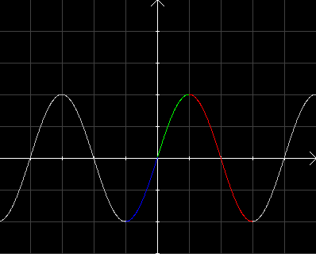

| Choisissez votre langue ! | Choose your language ! |
Etude d'un cas
Considérons la fonction numérique de domaine ℝdéfine par:f(x)=2sin(πx/2)
Cette fonction possède les propriétés suivantes:
- Elle est périodique de période 4
- Elle est impaire
- Elle possède 2 pour antipériode
Study of a case
Consider the numeric function with domain ℝ defined by:f(x)=2sin(πx/2)
This function has the following properties:
- It is periodic with period 4
- It's odd
- It has 2 for antiperiod

Supposons connu le graphe de la fonction dans l'intervalle [0,1] (morceau de courbe en vert).
Alors par imparité il est connu dans l'intervalle [-1,0] (morceau de courbe en bleu).
Du fait que f admet 2 pour antipériode il est connu sur [1,3] (morceau de courbe en rouge).
Le graphe est donc connu sur l'intervalle [-1,3] qui est un intervalle de longueur période.
Il est donc connu partout par périodicité.
Alors par imparité il est connu dans l'intervalle [-1,0] (morceau de courbe en bleu).
Du fait que f admet 2 pour antipériode il est connu sur [1,3] (morceau de courbe en rouge).
Le graphe est donc connu sur l'intervalle [-1,3] qui est un intervalle de longueur période.
Il est donc connu partout par périodicité.
Suppose the graph of the function is known in the interval [0,1] (piece of curve in green).
So by odds it is known in the interval [-1.0] (piece of curve in blue).
Since f admits 2 for antiperiod it is known on [1,3] (piece of curve in red).
The graph is therefore known over the interval [-1,3] which is an interval of period length.
It is therefore known everywhere by periodicity.
So by odds it is known in the interval [-1.0] (piece of curve in blue).
Since f admits 2 for antiperiod it is known on [1,3] (piece of curve in red).
The graph is therefore known over the interval [-1,3] which is an interval of period length.
It is therefore known everywhere by periodicity.
définition 1
L'intervalle [0,1] correspond ici à ce que nous appelerons un 'intervalle d'étude' pour la fonction, c'est à dire un ensemble minimal, tel que si la fonction est connue sur cet intervalle, compte tenu de ses propriétés elle est connue partout.
definition 1
The interval [0,1] here corresponds to what we will call a 'study interval' for the function, i.e. a minimal set, such that if the function is known on this interval, given its properties, is known everywhere.
Application à un algorithme de calcul
Aujourd'hui l'usage des calculatrices et des ordinateurs personnels est très répandu. Le calcul des valeurs de f(x) pour des fonctions complexes (transcendantes) se fait en rentrant la valeur de la variable et en appuyant sur le bouton correspondant pour une calculatrice ou en invoquant la fonction de la bibliothèque sur un tableur.Il n'en a pas toujours été ainsi. On utilisait dans un passé pas trop lointain des outils tels que les tables de logaritmes (Bouvard et Ratinet pour ceux à qui cela dit encore quelque-chose) ou bien la règle à calcul, que tout ingénieur se devait d'arborer fièrement sur son bureau comme signe distinctif de son statut.
Ces temps sont (heureusement) révolus, mais nous allons voir que les ordinateurs ne résolvent pas tout. Des mesures empiriques issues d'un dispositif expérimental, par exemple dans un labo de physique, donnent un tableau de valeurs, mais l'expression analytique de la fonction peut être soit totalement inconnue soit fort complexe. On sait par exemple que la fonction que l'on teste est périodique, et possède quelques autres propriétés telles qu'il est possible de calculer l'image de tout élément à partir de l'image de l'intervalle d'étude. L'idée est de calculer d'abord f(x) dans l'intervalle d'étude par un interpolation linéaire puis de calculer f(x) pour x quelconque en utilisant des transformations géométriques.
Nous allons simuler ce processus avec une fonction connue (la fonction sinus) pour que tout le monde comprenne bien d'une part et pour qu'on puisse vérifier la qualité des approximations trouvées d'autre part.
Programmation Python
Nous partons donc de 21 valeurs de la variable réparties uniformément (en progression arithmétique) sur l'intervalle [0,π/2]Application to a calculation algorithm
Today the use of calculators and personal computers is widespread. Calculating values of f(x) for complex (transcendent) functions is done by entering the value of the variable and pressing the corresponding button for a calculator or by invoking the library function on a spreadsheet.It has not always been so. In the not too distant past, tools such as logarithm tables or the slide rule were used, which every engineer had to display proudly on his desk. as a distinctive sign of its status.
Those times are (fortunately) over, but we're going to see that computers don't solve everything. Empirical measurements from an experimental device, for example in a physics lab, give a table of values, but the analytical expression of the function can be either totally unknown or very complex. We know for example that the function we are testing is periodic, and has some other properties such that it is possible to calculate the image of any element from the image of the study interval. The idea is to first calculate f(x) in the study interval by a linear interpolation then to calculate f(x) for any x using geometric transformations.
We are going to simulate this process with a known function (the sine function) so that everyone understands on the one hand and so that we can check the quality of the approximations found on the other hand.
Python Programming
We therefore start from 21 values of the variable distributed uniformly (in arithmetic progression) over the interval [0,π/2]
Programmation Julia
Julia programming
|
Création Gilles Dubois
Created by Gilles Dubois
|
Janvier 2022
January 2022
|
Version mobile Jquery
Mobile Jquery version
|
|